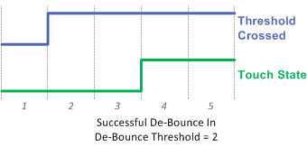

De-bouncing a capacitive touch sensor helps to ensure robust operation in noisy environments by providing control over how touch and proximity states are entered and exited. It works by requiring a sensor going through a state change (no-touch into touch, or touch into no-touch) to be in the new state for a certain number of samples before the state is actually updated in software. For example: with de-bounce switched off (set to 0), as soon as a touch threshold crossing occurs the touch state will be updated accordingly. If the de-bounce feature is switched on, and set to 1, a threshold crossing will not effect the state unless the measurement stays past the threshold for at least 1 (initial sample) + 1 (debounce sample) = 2 total samples.
Take the plot below as an example. The measurement results (over time for several samples) are plotted in the Count series. The Threshold Crossing logical series indicates when Count has passed the Touch Threshold. If no de-bounce is applied, then the Touch State, or our final output, will always be equal to the Threshold Crossing. In this example, let's assume that the second spike is due to noise- not a touch. De-bounce can be used to suppress this event so that it does not effect the touch state. If a de-bounce threshold of 2 is set, the second spike (the noise spike) does not remain past the threshold long enough to trigger a touch state. Now that de-bounce is applied, the Touch State is no longer equal to the Threshold Crossing.
De-bounce may be applied to touch or proximity state detection. The thresholds may be set independently for touch and prox, as well as the rising edge (into a touch/prox state) and falling edge (out of a touch/prox state). Below is an example of a successful de-bounce (touch state entered) and an unsuccessful debounce (touch state not entered).


The falling edge feature (de-bounce out) is particularly useful when it is undesirable to detect a "new" touch if a user accidentally lets go of a button for a short period of time, and then returns it. The plots below demonstrate a successful exit of a touch state, and an unsuccessful exit (a temporary removal).

Implementation Notes
De-bounce configurations are set on a sensor basis. All elements within a sensor will share
the same de-bounce thresholds. There are four thresholds that may be set:
- Proximity De-Bounce In
- Proximity De-Bounce Out
- Touch De-Bounce In
- Touch De-Bounce Out
It is important to note that applying de-bounce to a sensor increases the response time of the sensor. For example, if a system is set up to measure at a 20 Hz rate (every 50 ms), a de-bounce of 1 increases the response time to a touch from 50ms to 100ms. This delay is in addition to any delay imposed by count filtering. If heavy de-bounce is to be used, it may be necessary to increase the sample rate.
Range of Valid Values for De-bounce Thresholds
De-bounce thresholds may be set between 0 and 15. Zero is equivalent to no de-bounce.
Affected Software Parameters
The Prox_Debounce_In_Threshold parameter corresponds to the
ProxDbThreshold.DbIn
member of the
tSensor
type in the CapTIvate Touch Library.
The Prox_Debounce_Out_Threshold parameter corresponds to the
ProxDbThreshold.DbOut
member of the
tSensor
type in the CapTIvate Touch Library.
The Touch_Debounce_In_Threshold parameter corresponds to the
TouchDbThreshold.DbIn
member of the
tSensor
type in the CapTIvate Touch Library.
The Touch_Debounce_Out_Threshold parameter corresponds to the
TouchDbThreshold.DbOut
member of the
tSensor
type in the CapTIvate Touch Library.